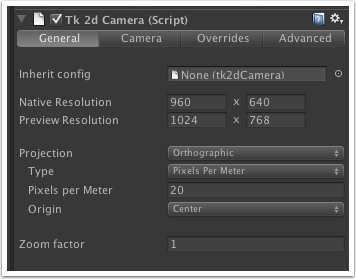
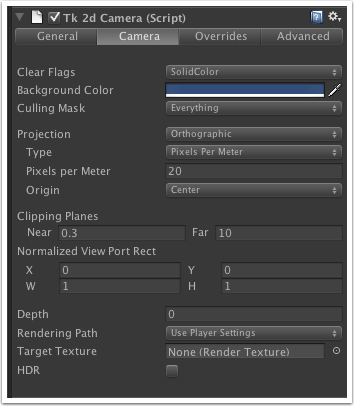
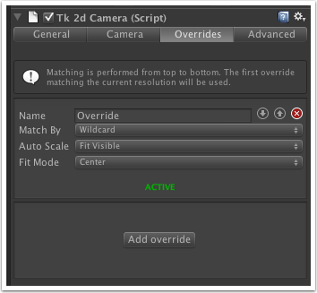
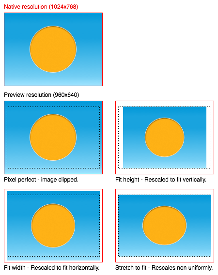
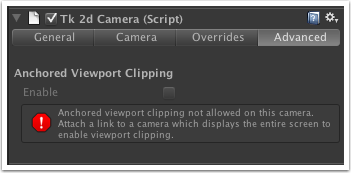

Documentation
Script Reference
Forum
Documentation
Script Reference
Forum

Inherit config - Drop in another tk2dCamera to inherit native resolution, projection and override configuration. This is useful to keep multiple tk2dCameras in sync with one another, eg. when setting up parallax using multiple cameras.
Native resolution - The resolution your game is set up to run at natively.
Preview resolution - The preview resolution is detected where possible from the Unity game window resolution setting. If you have the game window set to an aspect ratio, or Free Aspect, the tk2dCamera will not be able to detect a resolution and you will have to enter your preview resolution explicitly. It is easier to select the appropriate resolution in the game window. Best practice here is to simply set the game view resolution how you wish to preview the game.
Projection - Either Orthographic or Perspective. The tk2dCamera has limited support for perspective cameras, but has a useful helper function allowing you to set the sort mode directly from the interface.
Type - Available with orthographic projection. Either Pixels Per Meter or Orthographic Size.
Origin - Sets up the origin (0, 0) of the camera.
Setting a pixels per meter setting of 1 and Origin to bottom left will make the tk2dCamera work exactly as it did in 2D Toolkit 2.0 and earlier.

This view is nearly identical to the Unity camera set-up. Refer to the Unity camera component documentation for more information and a description of all the settings in here.

When the tk2dCamera code runs at a different resolution to the native resolution - it uses resolution overrides tell it how to work at this new resolution. Resolution matching is performed from top to bottom in the list, and the first matching override is used.
Match By - Used to decide if the current resolution matches the override.
Wildcard - Matches any and all resolutions. Resolution - Matches an exact resolution. Eg. type in 1024 x 768 if you want to match this override. Aspect Ratio - Matches based on aspect ratio. Enter 16 : 9 to match all 16 : 9 resolutions (1280x720, etc).
If a suitable override is NOT found for the current resolution, tk2dCamera will rescale the camera to display the contents pixel perfect.
Auto Scale - tells tk2dCamera how to rescale the "Native view" content to fit the preview resolution.
None - You specify an explicit scale
Fit width - The camera will attempt to fit the width. The camera might overflow vertically.
Fit height - The camera will fit the height. The camera might overflow horizontally.
Fit visible - Fit the larger axis. The entire image (based on native resolution) will always be visible.
Stretch to fit - Non-uniformly scales the native resolution to fit the preview resolution. Everything will ALWAYS be visible, but may be stretched.
Closest multiple of two - Limits the scaling to multiples of two. This will help you maintain a blocky look for your game if you so desire.
Pixel perfect - No scaling is performed, 1 pixel in the native resolution will map to exactly one pixel in the preview resolution. You may display more or less information than the native resolution.
Fit Mode - Either centers the result, or offsets it. Leave at default values, unless you need to handle a particular resolution differently.
The image below demonstrates the different auto-scale settings - the game is initially set up with a native resolution of 1024x768 and previewed at 960x640 with various auto-scale settings.
overridedescription">

Anchored viewport clipping - When enabled, and prerequisites met (another unclipped camera is present in the scene, and this camera inherits configuration from the main one), will allow you to set up viewport clipping by entering native resolution coordinates. This means that the clipping region will remain correct regardless of override.
There is a known issue with Unity 4.0 and 4.1 currently, where lit shaders don't light correctly in game view. This is a bug in Unity which has been fixed, and will likely make it into the next version. This bug isn't present in Unity 3.5.7.